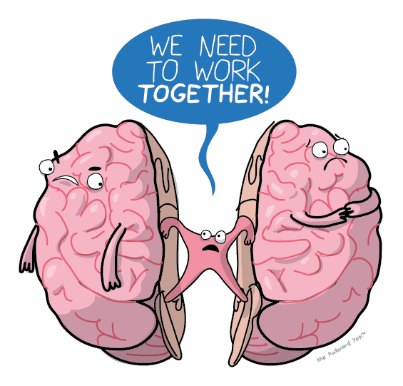
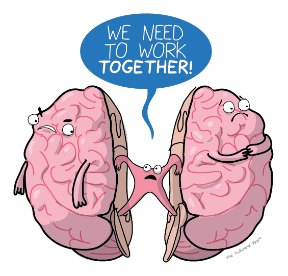

Back to Homepage

Back to Homepage

Left Hemisphere
- The left hemisphere controls the right side of the body.
- The left houses primary language centers.
- It excels in making inferences.
Right Hemisphere
- The right hemisphere controls the left side of the body.
- The right assists with spatial depth and perception.
- It regulates our speach to make it more clear and concise.
- It also gives a sense of self.
Corpus Callosum
In the middle of the brain. The band of neural fibers connecting the left and right hemispheres. When cut, the two sides cannot communicate with each other. Each side will act separately, as seen in split brain patients.